IUPAC Nomenclature
(You Tube Playlist Link)
- 01 : Some Basic Principles and Naming Of Alkanes
- 02 : Complex Substituents and Cycloalkanes
- 03 : Naming Of Alkenes and Alkynes
- 04 : Functional Groups with Secondary Suffix
- 05 : Naming Of Alcohols
- 06 : Naming Of Aldehydes and Ketones
- 07 : Naming of Carboxylic Acids and Acid Halides
- 08 : Naming Of Acid Amides and Esters
- 09 : Naming of Cyanides, Amines, and Ethers
- 10 : Naming of Polyfunctional Compounds (More than One Functional Group)
- 11 : Naming Of Aromatic Compounds - Benzene Rings
- 12 : Naming Of Bicyclo and Spiro Compounds
-
-
IUPAC Basic rules
- IUPAC = International Union of Pure and Applied Chemistry.
-
Three things in naming of organic compounds
-
Prefix :
- Primary : \(\text{1}^o\) = rarely used = example: cycle/bicyclo/spiro
- Secondary : \(\text{2}^o\) = branches / Substituents (ex: alkyle groups)
- Word root = number of Carbons in the main chain = meth,eth etc
-
Suffix :
- Primary : \(\text{1}^o\) = type of C-C bond: ane/ene/yne
- Secondary : \(\text{2}^o\) = functional group = example, alcohol, aldehyde etc.
-
Prefix :
- Naming = secondary prefix + primary prefix + word root + primary suffix + secondary suffis
-
Secondary prefix
- Secondary prefix = branches or substituents (not part of main chain)
- Their position is very important.
- Example Halogens (X) : Fluoro, Chloro, Bromo, Iodo
- -N=O- is "Nitroso"
- \(\text{N}_3\) : "Azido/Azo"
- Example -R- = Alkyle groups : methyl (\(\text{CH}_3\)), ethyl (\(\text{C}_2{H}_5\)), propyl (\(\text{C}_3{H}_7\)), phenyl (\(\text{C}_6{H}_5\))
- -OR- : "Alkoxy"; example: methoxy (\(\text{OCH}_3\)), ethoxy(OEt) (\(\text{OC}_2{H}_5\)), OPh - Phenoxy
-
Word Root
- Word root = number of carbon in the main chain (longest chain)
-
Number of C
in main chainName 1 Meth 2 Eth 3 Prop 4 But 5 Pent 6 Hex 7 Hept 8 Oct 9 Non 10 Dec 11 Undec 12 Dodec 13 Tridec 14 Tetradec 15 Pentadec 16 Hexadec 17 Heptadec 18 Octadec 19 Nonadec 20 Icos
-
Primary Suffix
- Primary Suffix defines what is the bond between C-C in the main chain
-
- Single bond = "ane"
- Double bond = "ene"
- Triple bond = "yne"
-
Nomenclature Rules
- Select the longest chain; and this chain need not be straight. This is the main/principal chain.
- If two or more longest C-C chains are there, select the one with the maximum number of branches.
- Numbering of carbon atoms : numbering should be done in a way that the branch gets the lowest "locant" (location). Also known as the "lowest locant rule".
- Note: "bond line notation" = zig zag line instead of straight bond lines. The pointy parts of the zig zag line indicates presence of C-atom.
- Numbering as per the "lowest sum rule" : if more than one numbering is happning when there are multiple substituents, add the position of all the substituents and compare the sums. The numbering with the lowest sum wins.
- Higher priority than the above = "first point of difference" - start numbering so that you can see a substituent gets the lowest numbering first. This rule dominates over the "lowest sum rule."
- Name the substituents alphabetically. Exception is when "di", "tri" etc are there. These are not considered alphabetically.
- If there is a tie in first point of difference, then go alphabetically on substituents (example 4 below)
- Nomenclature Examples (single bond only)
- Example 01 : 5-ethyl-3-methyl-octane \(\rightarrow\) First point vs lowest sum.
- Example 02 : 5-ethyl-3,3-dimethyl heptane numberings. \(\rightarrow\) When first point of difference is same for two different numbering + Exception to alphabetical rule.
- Example 03 :4-bromo-1-chloro pentane \(\rightarrow\) Alphabetical substituents
- Example 04 :1-bromo-4-chloro butane \(\rightarrow\) Tie in first point of difference, then go alphabetically on substituents.
- Quick Summary of numbering rules
- Questions on Numbering
- Answer 1 : 2,2,3,3-tetramethyl butane
- Answer 2 : 2,3-dimethyl butane
- Answer 3 : 3-ethyl hexane
- Answer 4 : 5-ethyl-6-methyl decane
- Answer 5 : 3,3-diethyl pentane
- Extra Questions on Numbering
- 3-chloro 2-methyl pentane
- 4-ethyl 5-methyl octane
- 2-bromo 1-chloro 1-iodo ethane
- 3-ethyl 3-methyl hexane
- 3,4-dimethyl hexane
-
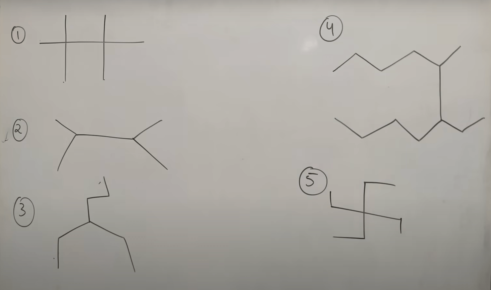

-
IUPAC Basic rules
-
-
What is a complex substituent
-
What is a complex substituent
- A complex substituentis one that has its own branching.
- Example
-
Naming rules of complex substituents
- Assign first number to the Carbon which is directly attached to the main chain.
- Then follow IUPAC naming for the complex substituent - treating it like a main chain with it's own substituents.
- The complex sunstituent is awlays written in brackets.
- The complex substituent should end with "yl" even though it is being treated as a carbon chain on it's own.
- Examples : complex substituent naming
-
Common naming of complex substituents
-
Example of common Name : the common name of the below compund
is

4-isopropyl octane - While assigning common name, we count all the carbon atoms in the complex substituent.
-
Rules for common names of complex substituents:
Substituent IUPAC Name Common Name Comments 
1-methyl ethyl Iso-propyl "iso" if a middle C is attached to the main chain. propyl n-propyl "n", if the edge C is attached to the main chain. 
butyl n-butyl since the edge C is attached to the main chain. 
2-methyl propyl iso-butyl 
1-methyl propyl secondary-butyl (or sec-butyl) The carbon that is attached to the main chain has two other carbons attached to it. 
1,1-dimethyl ethyl tertiary-butyl (or t-butyl/tert-butyl) The carbon that is attached to the main chain has three other carbons attached to it. 
pentyle n-pentyle 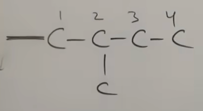 2-mthyl butyl iso-pentyl 
2,2-dimethyl propyl neo-pentyl if there is dimethyl at 2,2, it is called "neo".
-
Example of common Name : the common name of the below compund
is
-
Cycloalkanes
-
Example
This is cyclopropane.
-
Example
-
Naming of Cycloalkanes
-
if there is a chain and a cycle :
FG > double/triple bond > higher numer of C-atoms
Example:
Using the above rule, this compound is
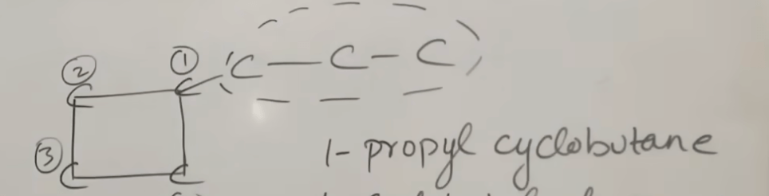
1-propyl cyclobutane. - If even the number of carbon atoms are the same, ring gets priority over chain, so Ring > Chain
-
if there is a chain and a cycle :
-
Examples on Naming of Cycloalkanes
-
HW Problems on Naming of Cycloalkanes
-
2-ethyl 1,1-dimethyl cyclohexane
-
2,3,4-triethyl 1-1dimethyl cyclobutane
-
-
What is a complex substituent
-
-
Rules of naming Alkenes and Alkynes
-
Rules of naming Alkenes and Alkynes
- Select longest C-C chain having maximum double or triple bond.
- Numbering should be done in a way that the double or the triple bonds get the lowest locant (position).
- Double/triple bonds have higher priority than substituents (F, Cl, Br, I, methyl, ethyl, nitro etc). This means that double/triple bonds get lower locant as compared to these sunstituents.
- Double and triple bonds are equal in priority
- If you see "a,e,i,o,u,y" one after another in a name, delete the first alphabet. Example oct-2-ene-4-yne has e and y one after another (with a 4 in the middle), so delete the 'e'. It becomes oct-2-en-4-yne
- In the rare case where there is a role tie, which means, they have the same number from either side, double gets higher priority than triple. See example 5 below.
-
Practice naming of Alkenes and Alkynes
Example 1
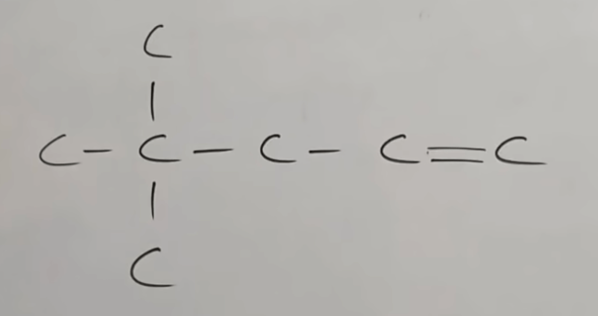
Ans: 4,4-dimethyl pent-1-eneExample 2

Ans: 4-bromo hex-2-eneExample 3

Ans: pent-1,3-dieneExample 4
Ans: oct-2-en-5-yneExample 5
Ans: pent-1-en-4-yneExample 6
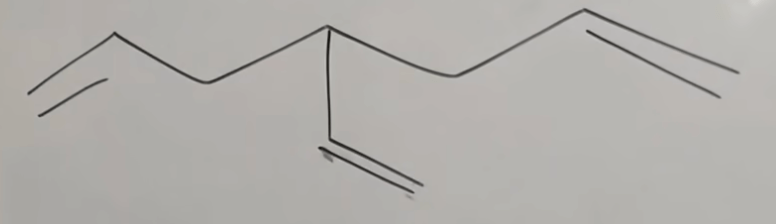
Ans: 4-ethenyl hept-1,6-dieneExample 7

Ans: 4-ethyl-5-ethynyl non-1,7-dieneExample 8
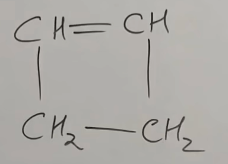
Ans: cyclobut-1-eneExample 9
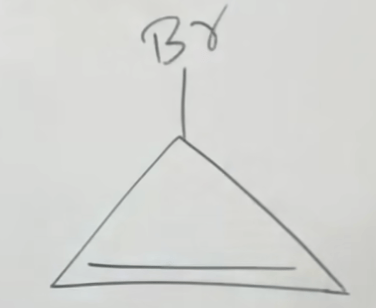
Ans: 3-bromo cycloprop-1-eneExample 10
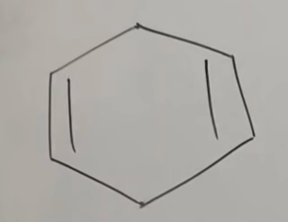
Ans: cyclohex-1,4-dieneExample 11
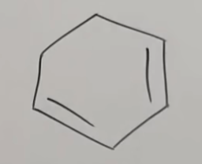
Ans: cyclohex-1,3-dieneExample 12
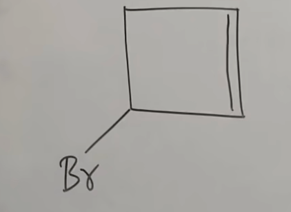
Ans: 3-bromo cyclobut-1-eneExample 13
Ans: 1,4-dichloro cyclobut-1-eneExample 14
Ans: 6-bromo-1-chloro cyclohex-1-eneExample 15

Ans: 4-bromo-3-chloro-3-iodo cyclobut-1-eneExample 16
Ans: 3-ethyl cyclohex-1-ene AND 1-cyclohexenyl eth-1-eneExample 17

Ans: 2-cyclopropyl prop-1-eneExample 18

Ans: 3-butyl cycloprop-1-ene - HW Problems on naming of Alkenes/Alkynes
- Answer 1 : 5-cyclopropyl cyclopent-1,3-diene.
- Answer 2 : 3-cyclopentyl cycloprop-1-ene
- Answer 3 : 4-(cycloprop-2-enyl) cyclopent-1-ene
- Answer 4 : (imp : "Alkylidene") 2-methylidene pent-1,4-diene
- Answer 5 : (imp : "Alkylidene") 5-ethylidene non-1,8-diyne
-
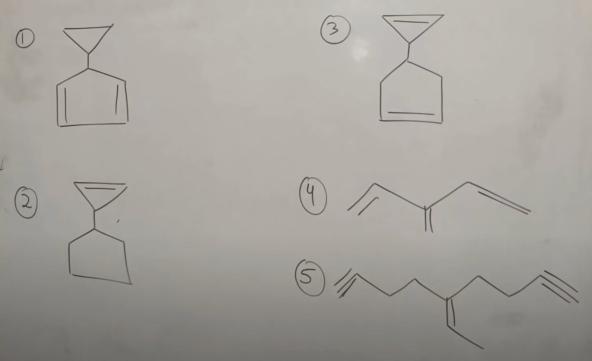
-
Rules of naming Alkenes and Alkynes
-
-
Introduction to functional groups
- Functional groups are atoms or group of atoms that give all physical as well as chemical properties to a compound.
- Functional Groups come as secondary suffix in a compound.
- Terminal Function Group (TFG) is the FG at the end of a carbon chain - ex: Acohol, Aldehyde, Acid. Numbering starts from the carbon in the FG.
-
As per IUPAC, the following are not funtional groups, even
though they actually are as they determine the property of the
compound:
- double bond
- triple bond
- Cl, Br, I, \(\text{NO}_2\)
-
Types, structure and suffix of different functional groups (as
per IUPAC)
Functional Group Structure ('R' = Alkyl group) Secondary Suffix Alcohol ol Ether alkoxy alkane Aldehyde al Ketone 
one Thio-alcohol
(Like alcohol, but S instead of O)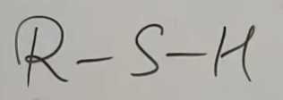 thiol Thio-ether
(Like ether, but S instead of O)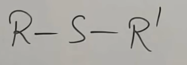 Alkyl thio alkane -
Amine
(\(\text{1}^o\) Amine - when the N is attached to one C) -
\(\text{2}^o\) Amine
when the N is attached to two C-atoms -
\(\text{3}^o\) Amine
when the N is attached to three C-atoms
- 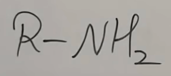
-

- amine
- N-alkyl alkanamine
- N-alkyl, N-alkyl alkanamine
Carboxylic Acid
Derivatives :- Acid Halide (acid + HX -> acid halide + water)
- Acid Amide (acid + \(\text{NH}_3\) -> acid amide + water)
- Ester (acid + alcohol -> ester + water)
- Acid anhydride (acid + acid -> anhydride + water)

Derivatives :-
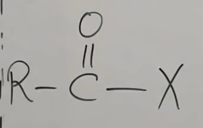 (acid halide) -
 (amide)
(amide)
-
(Ester) -
 (Acid Anhydride)
(Acid Anhydride)
oic acid
Derivatives :- oyl halide
- amide
- alkyl alkanoate
- alkanoic alkanoic anhydride
- Cyanide
- Iso-cyanide (isomer of cyanide)
-

-
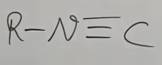
- nitrile
- iso-nitrile
These are not considered as FGs by IUPAC; bit they affect properties of the compaound - Nitro
- Halides
- Alkenes/Alkynes
N.A. (as not FG as per IUPAC; instead they are considered substituents.) -
Amine
-
Special Rule for naming of functional groups
- If a carbon containing funtional group is directly attached to a ring, the name changes as follows
Functional Group Name Example Aldehyde Carbaldehyde
cyclopropane-1-carbaldehydeAcid Carboxylic Acid 
cyclohex-1-ene carboxylic acidAcid Halide Carbonyl Halide 
4-bromo cyclobut-1-ene carbonyl chlorideAcid Amide Carboxamide 
Cyclobutane CarboxamideEster Carboxylate
methyl cyclobutane carboxylateCyanide Carbonitrile
cyclo pentane carbonitrile
-
Introduction to functional groups
-
-
- Alhohols have an "-OH" group attached to the Carbon atom of an alkyl group.
- IUPAC Secondary suffix = "ol".
- Start numbering of the Carbon chain in a way that the Functional Group get sthe lowest locant/number.
-
Examples on IUPAC and Common Names
- Common name = "Alkyl Alcohol".
- Common name of Methanol is Methyl Alcohol.
- Common name of Ethanol is Ethyl Alcohol.
-
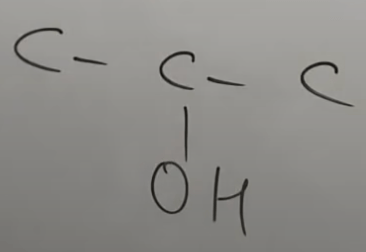
- IUPAC name is : propan-2-ol
- Common name is : iso propyl alcohol (as the middle carbon has the OH)
-

- IUPAC name is : propan-1-ol
- Common name is : n-propyl alcohol (as the OH is attached to the straight chain)
- More examples on Naming of Alcohols
-
- IUPAC : butan-1-ol (click for solution video):
- Common Name : n-butyl alcohol (click for solution video):
-
- IUPAC : 2-methyl propan-1-ol (he fixes error later!) (click for solution video):
- Common Name : iso-butyl alcohol (click for solution video):
-
- IUPAC : 2-methyl propan-2-ol (click for solution video):
- Common Name : tert-butyl alcohol (click for solution video):
-
- IUPAC : butan-2-ol (click for solution video):
- Common Name : sec-butyl alcohol (click for solution video):
-
Still more examples on naming of Alcohols
- HW propblems 1/2 on Naming of Alcohols
- Answer 1 (click for solution video): 1-(cycloprop-2-enyl) cyclohex-2-en-1-ol
- Answer 2 (click for solution video): 3-ethenyl-5-methylidene cyclohex-1-ol
- Answer 3 (click for solution video): 5-cyclopropyl hex-2-en-3-ol
- Answer 4 (click for solution video): 1-cyclopentyle cycloprop-1-ol
- Answer 5 (click for solution video): 1-(cyclohex-1-enyl) propan-2-ol
- HW propblems 2/2 on Naming of Alcohols (no solutions, only answers)
- 4-(4-methyl cyclohex-3-enyl) cyclobut-1-ene-1-ol
- 4-(eth-2-enyl) hept-1,6-dien-3-ol
- 1-(cyclopent-1,4-dienyl) 1-methyl eth-1-ol
-
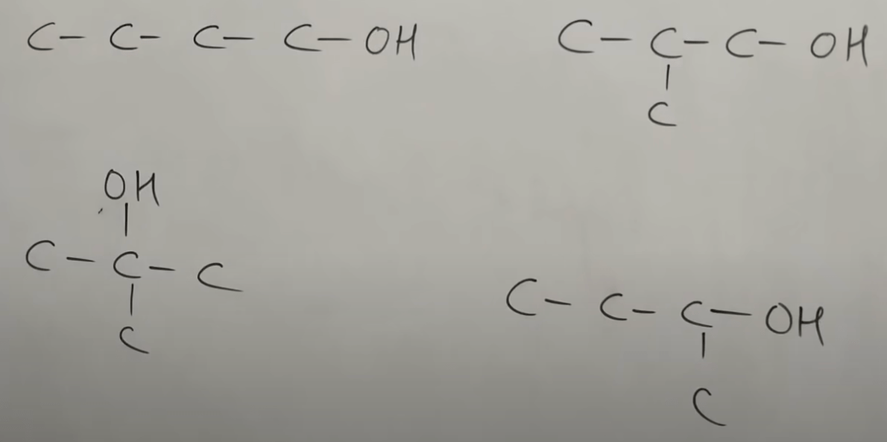
These are all isomers with the common formula \(\text{C}_4{H}_9{OH}\)

-
-
-
Introduction
-
Aldehyde : 'al' (C=O has H on one side and C on the other)

-
Ketone : 'one' (C=O has C on both sides)

- If "CHO" is a substituent, it is called "formyl"
- If the 'C' of CHO is not counted, we call the aldehyde "Carbaldehyde"
- If aldehyde is directly attached to a ring, it should be trated as "Carbaldehyde"
-
Ketone is in the middle of the chain whereas aldehyde is at
the end of the
-
Aldehyde : 'al' (C=O has H on one side and C on the other)
-
Nomenclature of some basic aldehydes
-
Basic Aldehydes:
- IUPAC : methan-1-al OR methanal
- Common name : Formaldehyde
- IUPAC : ethan-1-al OR ethanal
- Common name : Acetaldehyde
-
Basic Aldehydes:
-
Nomenclature of Aldehyde - practice
-
Nomenclature of some basic ketones
-
- Nomenclature of cyclic ketones
-
Common names of ketones
- Common name general form = "Alkyl Alkyl Ketone".
- The two alkyls are to be ordered alphabetically.
-
-
Introduction
-
-
Introduction to nomenclature of Carboxylic Acid and Acid
Halides
- Carboxylic Acid = COOH
-

- Secondary suffix = "oic acid"
- Acid Halide = COX, where 'X' is a Halogen.
-

- Secondary suffix = "oyl halide"
- Acid Halides are formed by the reaction of Carboxylic acid and a mineral acid (ex HCl)
-
Nomenclature of some common acids
-
Common/First/Smallest Carboxylic Acids:
-
Common/First/Smallest Carboxylic Acids:
-
Special rule for naming of Carboxylic Acid
- If the Carbon directly attached to a ring is the C of the acid functional group (COOH), the naming will be 'ring name' + 'carboxylic acid'
-
Example: this compound is "cyclohexane carboxylic acid"
-
Please note this below is not caboxylic acid as the C of the
COOH is not directly attached to the ring. Instead it is
"2-cyclopentyl ethanoic acid"

-
Questions on naming of Carboxylic Acids
- Nomenclature of multiple COOH acids
- Nomenclature of some common acid halides
-
Questions on naming of Acid Halides (set 1)
-
Special rule for naming of Acid Halides
- If the Carbon directly attached to a ring is the C of the acid halide functional group (COX), the naming will be 'ring name' + 'carbonyl halide'
-
Example: this compound has the normal naming "2-cyclohexyl
cyclohexane ethanoyl chloride"

-
This has the special rule applied to it; it's name will be
"cyclohexane carbonyl chloride"
-
Questions on naming of Acid Halides (set 2)
-
Introduction to nomenclature of Carboxylic Acid and Acid
Halides
-
-
Introduction to nomenclature of Acid Amides and Esters
- Acid Amides are \(\text{-CONH}_2\)
-
Acid amides can also be represented as :

- Secondary suffix = "amide"
- If the carbon of amide is directly attached to a ring, it is called "Carboxamide"
- Esters are : \(\text{R-COOR}^{'}\), where "\(\text{R}\)" and "\(\text{R}^{'}\)" are alkyl groups
-
Esters can also be represented as :
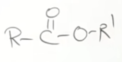 - Secondary suffix = "alkyl alkanoate"
- The alkyl group \(\text{R}^{'}\) is the "alkyl" - however long it may be, (see video) and the \(\text{R}\) is the "alkanoate".
- If the terminal ester functional group is directly attached to a ring, it is called Carboxylate.
-
Nomenclature of some common amides
-
Common/First/Smallest Acid Amides:

- Methanamide
- Ethanamide

- 2-cyclopropyl prop-2-enamide

- 2-phenyl propanamide
-
Common/First/Smallest Acid Amides:
-
Questions on naming of Amides
-
Naming of Esters - Examples and Practice
-
Introduction to nomenclature of Acid Amides and Esters
-
-
Introduction
-
Cyanides
-
Cyanide General Structure :

- Cyanide secondary suffix : Nitrile
-
Cyanide General Structure :
-
Amines
-
Amine General Structure :
- Amine secondary uffix : Amine
-
Degree of Amines
where N is attached to more than one C-atom
-
This is an example of a \(\text{3}^o\) amine as it has
C on three sides
It's name would be : N,N-dimethyl propan-1-amine -
This is an example of a \(\text{2}^o\) amine as it has
C on two sides

It's name would be : N-methyl ethan-1-amine
-
This is an example of a \(\text{3}^o\) amine as it has
C on three sides
-
Amine General Structure :
-
Ethers
-
Ether General Structure :
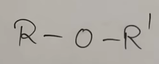 - Ether secondary suffix : Alkoxy Alkane
- Smaller chain = alkoxy and the larger chain = alkane
-
Ether General Structure :
-
Cyanides
-
Naming of Cyanides - Examples and Practice
-
Naming of Amines - Examples and Practice
-
Naming of Ethers (IUPAC + Common) and Epoxy - Examples and
Practice
-
Introduction
-
-
Introduction
- There can only be one primary functional group in a compound.
- The primary functional group is as per a pre-defined priority order, and the remaining are to be considered substituents.
-
Mnemonic for priority order and
suffix naming
"Car S An Tro (aisi thi) jaise Ambassador CIAKA Tempo (thi)."
Serial No Mnemonic Group FG Suffix Substituent Prefix TFG when attached directly to C-ring 1 Car 
Oic acid Carboxy Carboxylic Acid 2 S Sulphonic acid Sulpho X 3 An 
Oic anhydride X X 4 Tro 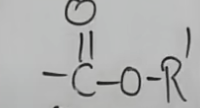 Alkyl Alkanoate Alkoxy Carbonyl Alkyl Carboxylate 5 Aisi 
Oyl halide Haloformyl Carbonyl halide 6 Ambassador Amide Carbamoyl Carboxamide 7 C Nitrile Cyano Carbonitrile 8 I 
Iso-nitrile Iso-cyano X 9 A 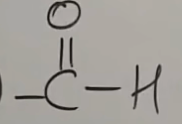 Al Formyl/Oxo Carbaldehyde 10 K One Oxo/keto X 11 A 
Ol Hydroxy X 12 T Thiol Mercapto X 13 Am 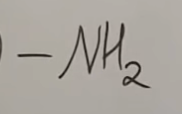 Amine Amino X 14 Po 
Epoxy X X
-
Examples and Practice
-
< href="https://youtu.be/RN7_Q38RePk?t=1753" class="link_no_style" target="_blank" >3-oxo butan-1-oic acid
-
-
Poly Functional Group attached to Ring : Examples and
Practice
-
-
Introduction
-
-
11.1 -> 11 : Naming Of Aromatic Compounds - Benzene Rings -->
-
Introduction to naming of Benzene and Related Compounds
-
-
Introduction to naming of Benzene and Related Compounds
-
-
- b
- l
- a
- h
-
- b
- l
- a
- h
-